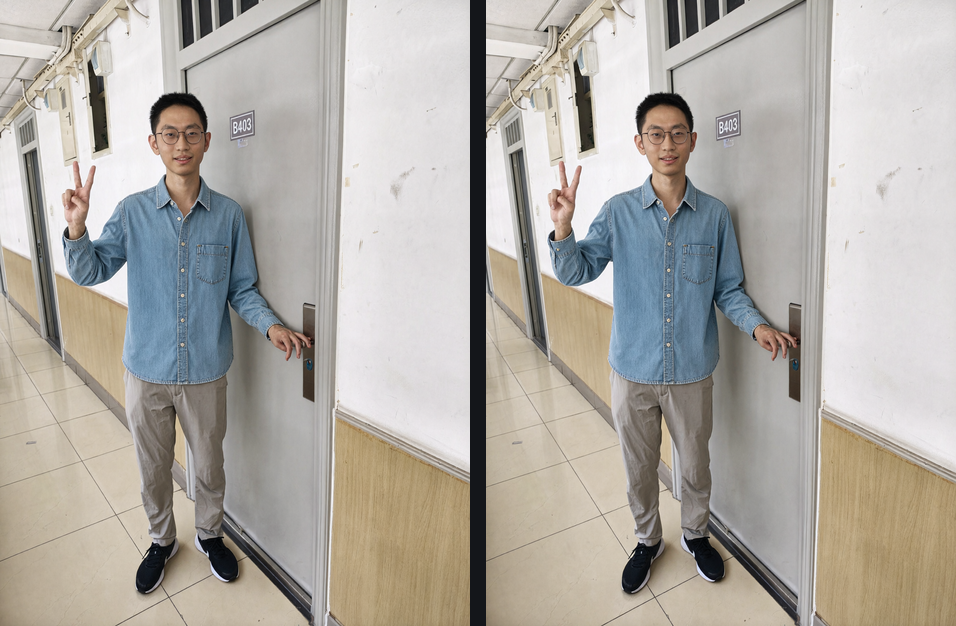
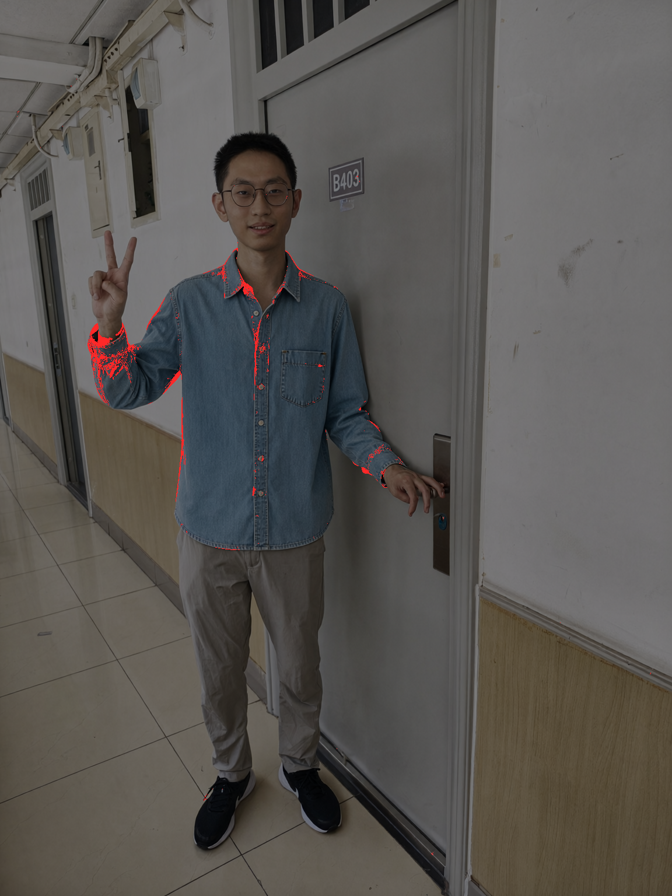
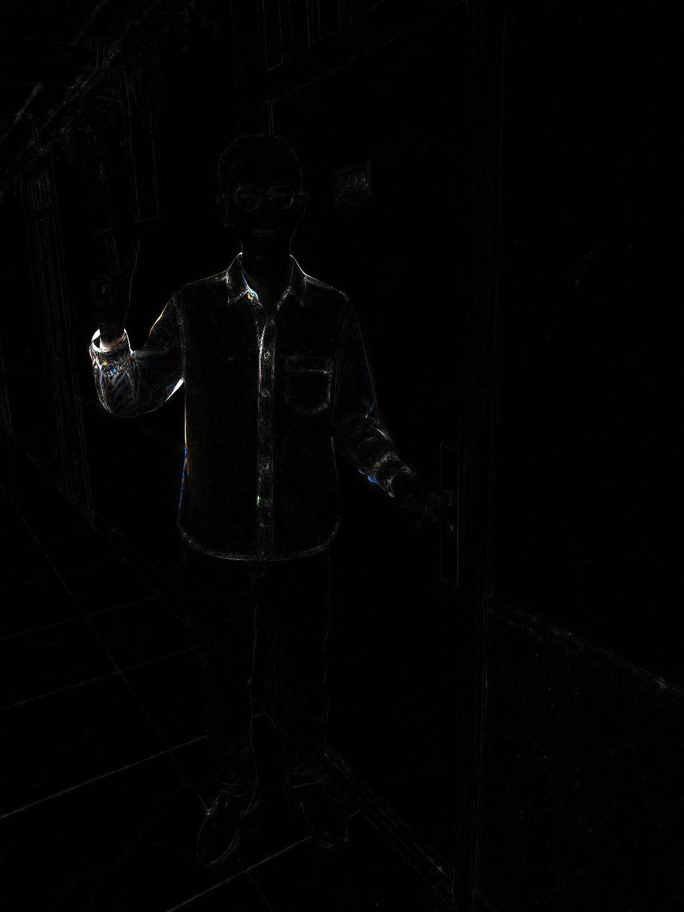

A-fork（8B 在图里算），右 C-live（llama.cpp 现取那 115 行）index.html）里离线腿的条件是从原始记录文件切的，
而生产的输入是 prepare_upload 之后的图 —— 两边的输入差着 ±1 级（人像平均 0.94/255、衣服 1.09，最大 18）。
本对的判读：56.69% 像素逐位不同，通道差过 16 的占 0.330%、过 32 占 0.138%，平均 0.891/255，PSNR 38.40 dB。
结论与 §23 一致（同构图、细节级），数字几乎没变（那边 0.385% / 38.19 dB）—— 混杂是真实存在的，只是没改变结论。

